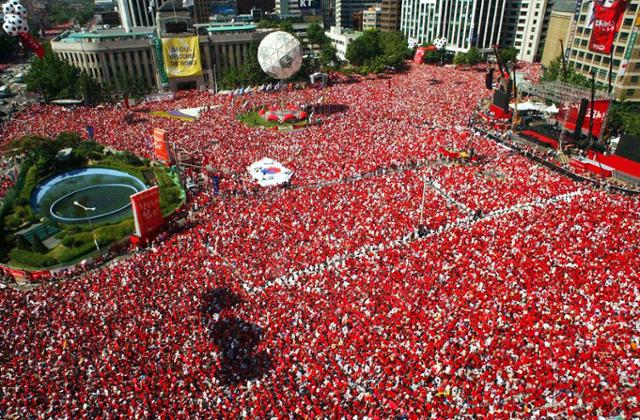

2002년에 열린 17회 FIFA 월드컵. 21세기 새천년에 개막한 첫 번째 월드컵이자 아시아 최초의 월드컵이며 한국 최초로 HD로 생중계된 월드컵이기도 하다.[4] 역대 월드컵은 물론 주요 국제 스포츠 대회 중 두 개의 나라에서 처음으로 공동개최한 대회이기도 하다. 2002년 5월 31일부터 2002년 6월 30일까지 32개국이 대한민국과 일본에 각 10개씩 위치한 무려 총 20개 경기장에서 64경기를 치렀다. 이는 양국이 모두 대회 단독 개최를 상정하고 경기장 건설/보수 계획을 세웠는데, 대회가 공동 개최로 결정된 뒤에도 이 계획을 그대로 진행하는 바람에 결국 역대 가장 많은 경기장에서 치러진 월드컵이 된 것이며 이 때문에 일본 측에서 32개국 진출, 64경기 → 40개국 진출, 96경기로 늘려달라고 FIFA에 강력히 요청했지만 받아들여지지 않았고, 결국 경기장 하나당 고작 서너 경기만 열렸다. 실제로 무려 2,000억을 들여 지은 서울월드컵경기장도 개막식과 개막전을 포함해 고작 세 경기만 열렸다. 그나마 그 세 경기들도 입장권 시스템 오류에 비인기 경기들만 개최되어 만석을 못 채웠다. 보통 FIFA 월드컵은 유럽의 프로축구리그 일정에 맞춰서 6월 중순 ~ 7월 중순에 열리는 경우가 많지만, 대회가 열리는 한국과 일본은 이 시기가 장마철이므로 대회 16강 토너먼트 이후의 경기 일정에 차질이 생길 것을 우려해서 시기를 조금 앞당겼고, 결국 2002년 5월 31일에 개막하여 2002년 6월 30일에 폐막하는 것으로 결정되었다. 2002년 6월 한국을 뒤덮었으며, 한국 축구 역사상 최전성기이자 신화로 불린다. 6월 한 달간 한국은 말 그대로 붉은색 물결로 완전히 뒤덮였고, 언론 역시 '스포츠 뉴스' 코너가 아님에도 일제히 월드컵 관련 소식들만 줄곧 보도할 정도였다. 월드컵이 끝난 7월에도 열기가 남아서 월드컵 관련 뉴스들이 계속해서 등장하거나 예능에서도 월드컵을 소재로 방송을 많이 했었다. 사실상 당시 한국 국민들은 홈그라운드의 이점에 힘입어 최초의 16강 진출 정도를 처음에는 기대했었는데, 그 기대를 완전히 넘어서 무려 월드컵 4위를 기록하는 기염을 토했으니, 한국 역사에 남을 "미치도록" 좋은 결과라고 봐도 과언이 아니다. 한국 축구의 목표 성적이 2라운드 16강 이상으로 확대된 시기도 이 때였다. 유명한 붉은 악마 티셔츠는 21년이 지난 2023년 지금도 계속 온라인에서 팔리고 있다. 사실상 붉은 악마 컨셉이 축구에서 한국의 상징이 아예 고정적으로 되어버린 월드컵이기도 하다. 열기가 2002년 수준 만큼은 아니지만, 요즘도 월드컵이 열릴때가 되면 항상 붉은악마 셔츠를 입고서 맥주를 마시고 응원하는 사람들을 볼 수 있다. 특히 월드컵이 끝난 지 오래되지 않은 2003년부터 2006년 독일 월드컵 때까지, 그리고 2010년 남아공 월드컵 때만 해도 많은 사람들이, 그리고 아이돌 가수들도 빨간 셔츠를 많이 입었다. 이후 2014년 브라질 월드컵 때부터는 많이 사그라들어 현재와 비슷해졌다. 사실 한국에서 열린 월드컵이었기에 2002년 열기는 유독 한국인들한테는 각별했다고 볼 수 있다.
